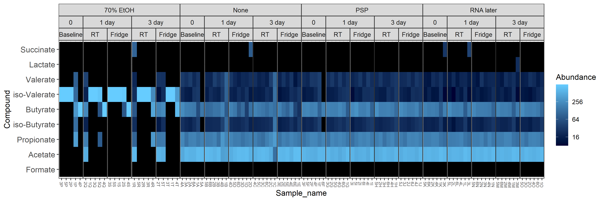

Chapter 5 Figure 5
5.1 libraries
library("ggplot2")
library("phyloseq")
library("tidyverse")
library("dplyr")
library("vegan")
library("reshape2")
library("ggplot2")
library("ggh4x")5.2 Preprocess data
#Load phyloseq
load(file = "data/lipid_physeq_object")
#Set to even sampling depth
#Set to even sampling depth (1000)
physeq_1k = transform_sample_counts(physeq,
function(x) 1000 * x/sum(x))
#save physeq object
save(physeq_1k, file = "./data/lipid_physeq_1k_object")5.3 Colour blindy friendly palette
cbbPalette <- c("#000000", "#E69F00", "#56B4E9", "#009E73", "#F0E442", "#0072B2", "#D55E00", "#CC79A7")
theme_set(theme_bw())
scale_colour_discrete <- function(palname=cbbPalette){
scale_colour_manual(values = palname)
}
scale_fill_discrete <- function(palname=cbbPalette){
scale_fill_manual(values=palname)
}5.4 A Heatmap
#Choose order for temp
#sample_data(physeq_1k)[,"Temp"] <- factor(sample_data(physeq_1k)[,"Temp"], levels = c("Baseline", "RT", "Fridge"))
#Make relative abundance physeq
physeq_relabund <- microbiome::transform(physeq, "compositional")
#Heatmap
heatmap_facet <-
plot_heatmap(physeq_relabund,
sample.label = "Sample_name",
taxa.label = "Compound") +
facet_nested( ~ Buffer.type + Storage.time + Temp , scales = "free_x") +
theme(panel.spacing.x=unit(0, "lines")) +
theme(axis.text.x = element_text(size=6))
ggsave(plot = heatmap_facet,
filename = "figures/lipid_heatmap.png",
device = "png", dpi = 300,
units = "mm", width = 300, height = 100)
5.5 B and C Beta diversity
#NMDs bray curtis
physeq_1k_ord_nmds_bray <- ordinate(physeq_1k, "NMDS", "bray")#NMDS_bray facetted by Buffer.type.Temp, shape by sample
NMDS_bray_facet <-
plot_ordination(physeq_1k, physeq_1k_ord_nmds_bray,
color = "Sample.number", shape = "Temp") +
geom_point(size=3) +
facet_wrap( ~ Buffer.type, nrow = 1) +
theme(legend.position="bottom") +
labs(color = "Patient number")
ggsave(NMDS_bray_facet,
filename = "./figures/Lipids_NMDs_bray_curtis_facet_colour_by_sample.png",
device = "png", dpi = 300,
units = "mm", width = 300, height = 100)
#NMDS_bray facetted by Buffer.type.Temp
NMDS_bray_facet <-
plot_ordination(physeq_1k,
physeq_1k_ord_nmds_bray,
color = "Storage.time", shape = "Temp") +
geom_point(size=3) +
facet_wrap( ~ Buffer.type, nrow = 1) +
theme(legend.position="bottom")+
labs(color = "Storage time")
ggsave(NMDS_bray_facet,
filename = "./figures/lipids_NMDs_bray_curtis_facet.png",
device = "png", dpi = 300,
units = "mm", width = 300, height = 100)